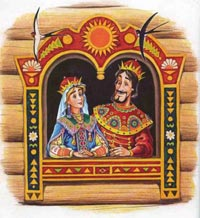
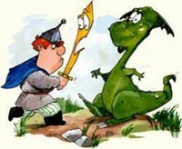
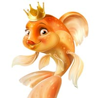

Добро пожаловать на сайт сказок народов мира тысяча и одна ночь - azku.ru. Что же такое сказка?
 Ровный золотистый свет луны заливал высокий дом, стоящий на сваях, как на ходулях, освещал ребятишек и взрослых, сидящих на высоком помосте — открытом крыльце — вокруг старого Тхыонга, деда-сказочника. Невдалеке сквозь тропическую ночь скорее угадывались, чем виднелись силуэты невысоких, сгорбленных, как черепахи, вьетнамских гор. Размеренно и напевно лилась речь — дед рассказывал сказки. В них, как и в сказках всех народов мира, жила дерзновенная мечта человека о счастье, о чудесных предметах и чудесах: ковре-самолете и тысячемильных туфлях, о дворцах, возникающих по волшебству, и о необыкновенных, огромных рисовых зернах. Сказка — удивительное творение человеческого гения, она возвышает человека, радует его, дает веру в свои силы, в будущее, увлекает достижимостью того, что кажется вроде бы совершенно невозможным... Наутро я прощался с дедом Тхыонгом, и еще долго слышались мне мелодичные и величавые звуки гонга, доносившиеся из его дома, где собрались люди по случаю отъезда советско-вьетнамской экспедиции фольклористов  Конечно, сказки слушали и слушают и в русских избах, и в африканских хижинах, крытых пальмовыми листьями. Словом, всюду. Но теперь, чтобы познакомиться со сказками почти любого народа мира, не обязательно слушать сказочника, достаточно протянуть руку к полке с книгами: ныне эти сказки переведены на многие языки, стали осознанно важным явлением мировой культуры, без которого она оказалась бы далеко не полной, а детство каждого из нас — лишенным чего-то важного. Но так было далеко не всегда, и Пушкин в 1824 году в своем письме из ссылки — села Михайловского — сетовал и восхищался: «Вечером слушаю сказки — и вознаграждаю тем недостатки проклятого своего воспитания. Что за прелесть эти сказки! Каждая есть поэма!» Разумеется, что сказки, оказавшись зафиксированными в книге, вышедшей многотысячным тиражом, сохранятся для грядущих поколений. Их прочтут и те, кто никогда в жизни не увидит сказочника или сказочницу. Но, не будучи свидетелями мастерского исполнения таких сказочников, как дед Тхыонг, мы многое потеряем. Ведь дед и напевно декламировал, и подражал гомону птиц, рокоту горных потоков, рычанию тигров и трубным звукам слонов. Он имитировал шум джунглей, крик обезьян, звон ручья. Словом, это был своеобразный театр одного актера, тем более что сказочник дополнял выразительность своего выступления еще и жестом. О том, сколь важную роль в жизни людей играло устное творчество, говорит тот факт, что в пантеоны местных культов разных народов входили боги или духи — покровители певцов, сказителей и сказочников.  Фольклор, таким образом, в отличие от литературы, искусство не только словесное. Оно включает в себя жест, элементы театральной игры, мелодию, пение. Это искусство многосоставное, синтетическое. Кроме того, это искусство коллективное, потому что фольклорное произведение создается в народе, передается и шлифуется на протяжении долгого времени. А сказочник — не автор, а исполнитель сказки, хотя он, конечно, в меру своего таланта вносит в сказку нечто новое, обогащает ее. Поэтому у сказки есть много вариантов, но нет, как у литературного произведения, единственного, установленного волей автора канонического текста , который один только и должен быть представлен читателю. Очень важно заметить, что сказочник основывается на традиции рассказывания и следует ей: попытайся он нарушить традицию, отойти от нее — слушатель тотчас уловит искусственность, фальшьЧто же такое сказка? Чем она отличается от мифа, легенды, предания? Читать далее...